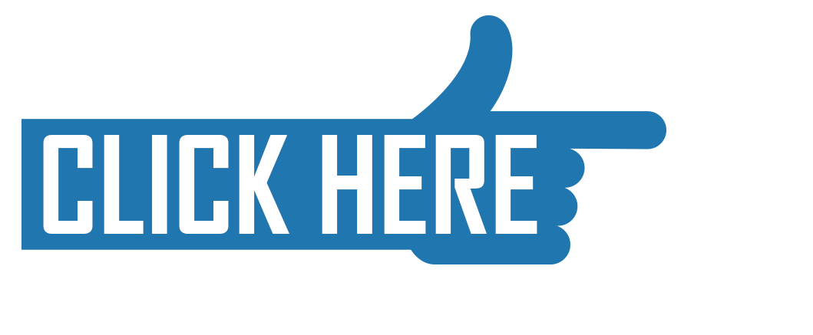

Project D: Brain Tumor Image Classifier
Keywords: Convolutional Neural Networks, VGG-16 CNN, Deep Learning, Image Classification, TensorFlow, Keras, Data Augmentation, Transfer Learning, Medical Imaging
This project builds a binary image classifier to distinguish Pituitary Tumor in MRI scans of patients using a Kaggle dataset. A subset of 1,000 images is used, with data augmentation to prevent overfitting. Transfer Learning with a VGG-16 pre-trained model is applied to enhance performance, showcasing robust medical image classification techniques.
Brain Tumor Classifier
Project C: Bank Customers Churn Prediction
Keywords: Neural Networks, Deep Learning, Customer Churn Prediction, TensorFlow, Keras, SMOTE, Class Weight, Customer Relationship Management (CRM), Predictive Analytics
This project leverages customer data analysis to identify key factors that influence customer retention and utilizes this insight to develop a Neural Network Model. The designed model aims to predict the likelihood of a customer churning within the next 6 months. By harnessing this predictive capability, the model can be effectively used in customer relationship management strategies to enhance retention rates. Applications include proactive customer engagement, personalized offers, and targeted support interventions, all crucial for reducing churn and improving service satisfaction.
Bank Churners Prediction
Project B: Audio Digit Recognition
Keywords: Artificial Neural Networks, Librosa, TensorFlow, Keras, Deep Learning, Audio Processing, Speech Recognition
This project utilizes the Librosa library to visualize the Audio MNIST digit dataset and converts it into a numerical database for training an Artificial Neural Network (ANN). The trained model is designed for speech recognition applications, specifically for recognizing spoken digits. Such a digit speech recognition model can be applied in various domains, including voice-activated security systems using digit-based codes, automated telephone operators, and similar use cases.
Audio Recognition
Project A: Conversational Chatbot Powered by OpenAI API
Keywords: OpenAI API, Generative AI, Retrieval-Augmented Generation, JavaScript, AWS Amplify
This ChatBot utilizes OpenAI's API to integrate the ChatGPT 3.5 language model, enabling interactive conversations with users. The project is developed using JavaScript and deployed on AWS using Amplify for seamless scalability and hosting.
OpenAI API ChatBot
Project 9: Credit Card Users Churn Prediction
Keywords: Machine Learning, GradientBoosting, GXBoost, Logistic Regression, SMOTE, Cross Validation, Churn Prediction, Hyperparameter Tuning
This project is my favorite so far! It evaluates 18 machine learning models to predict whether a bank's credit card users will churn or continue using the service. After identifying the top three models, it fine-tunes their hyperparameters to determine the best-performing model for this type of data.
CC Users Churn Prediction
Project 8: Employee Attrition Estimator
Keywords: Random Forest, Bagging, Machine Learning, Model Evaluation, HR Analytics, Talent Retention
This Employee Attrition Estimator leverages a Random Forest machine learning model to predict employee turnover, identifying key factors contributing to attrition. This tool helps organizations proactively retain talent by providing insights into which employees are at risk of leaving.
Employee Attrition Estimator
Project 7: Decision Tree Classifier: Personal Loan Campaign
Keywords: EDA, scikit-learn, Model Building: Decision Tree, Pruning, Supervised Learning, Model Performance Evaluation & Improvement
This machine learning project uses a decision tree model to predict whether liability customers at AllLife Bank will convert to personal loan customers, helping the bank identify high-potential customers for targeted marketing and personalized loan offers.
Loan Conversion Prediction
Project 6: Webpage Scraper
Keywords: Web Scraping, BeautifulSoup, Data Extraction, Treemap, Squarify
A simple web page scraper using BeautifulSoup and Requests libraries to pull data from a Wikipedia page. This data is then visualized with Squarify to create a Treemap, illustrating the revenues of top companies categorized by industry.
Web Scraper
Project 5: Education vs. Economy
Keywords: Interactive Visualizations, Matplolib, Seaborn, Plotly, statsmodels
Animated graphs explore the relationship between years of schooling and GDP per capita across countries over time. Colored by country characteristics, the plots include a trendline to highlight correlations, providing insights into education's impact on economic growth.
Education vs Economy
Project 4: COVID-19 Detection from X-Rays
Keywords: Image Processing, Python, OpenCV, TensorFlow, Keras, Seaborn, Gradio
A COVID-19 detection project utilizing X-ray images aims to identify signs of infection through advanced image analysis. The model enhances diagnostic accuracy, aiding healthcare professionals in timely decision-making, and improving patient outcomes while leveraging AI for efficient image interpretation.
COVID-19 Detection
Project 3: FoodHub Order Analysis
Keywords: Python, NumPy, Pandas, Matplotlib, Google CoLab, Exploratory Data Analysis (EDA), Univariate & Bivariate Analysis, Business Recommendations
An exploratory data analysis (EDA) project on FoodHub’s order data, revealing trends, optimizing delivery times, and enhancing customer satisfaction. Insights include popular cuisines, customer feedback, and revenue impact. Recommendations focus on improving ratings, promoting top restaurants, and streamlining delivery operations.
FoodHub Order Analysis
Project 2: Atom Simple
Keywords: Next.js, React, JavaScript, DynamoDB, AWS Cognito, AWS Amplify
A web application utilizing Amazon Cognito for user authentication, enabling sign-up and sign-in functionality. Registered users can access and interact with dynamic storybooks. User metadata is securely stored in a DynamoDB database. The entire application is deployed and managed through AWS Amplify for seamless scalability and integration.
Atom Simple
Project 1: AI TutorBot
Keywords: AWS Bedrock, Generative AI, Knowledge base, Conversational AI, LLM
Developed an intelligent, generative AI-powered chatbot using AWS Bedrock and foundation models for customer support. The chatbot leverages uploaded documents to build a comprehensive knowledge base, enabling natural, conversational interactions. It can be seamlessly integrated into a website to engage with customers and provide personalized assistance.
AI TutorBot
Project 0: Visualizing Canvas Discussion Interactions
Keywords: Social Network Analysis (SNA), Socail Network Diagram (SND), Discussion Analytics, Interaction Mapping, Web Scraping
These graphs scrape data from discussion forums in a Canvas course, creating Social Network Diagrams (SND) to make Social Network Analysis (SNA). They visualize interaction patterns among participants, highlighting key contributors and engagement levels to enhance understanding of collaborative learning dynamics.
Social Interaction Mapping